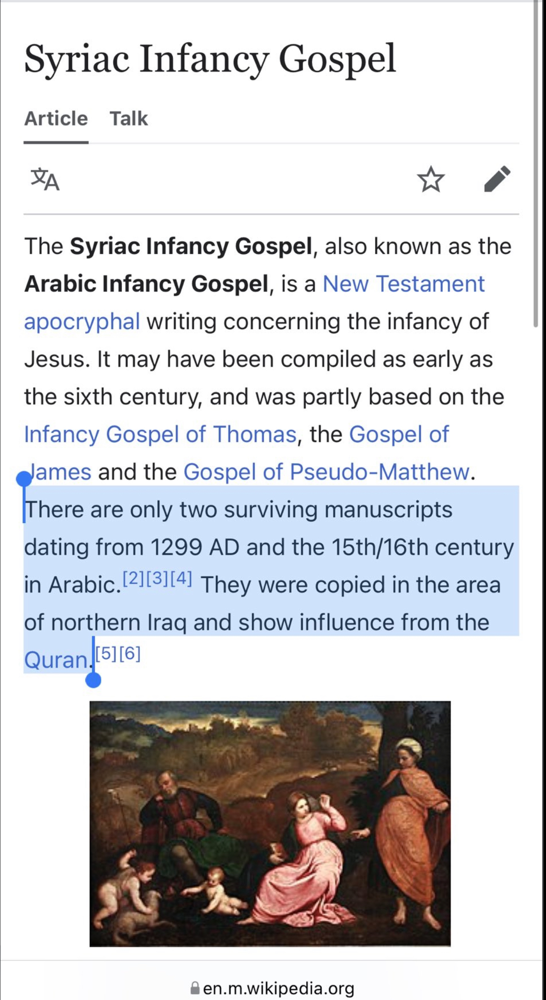

Credit to Bassam Zawadi
Several Christian polemicists keep putting forth this argument however the problem that many of these Christians don't realize is that they are employing double standards. Christian apologists are continuously answering critics who claim that Christianity was influenced by paganism and several of its myths. However, Christian apologists are either replying back saying:
This is an act of Satan's deception:
Many of the early church writers such as Irenaeus, Justin Martyr and Tertullian claimed that the similarities between Christianity and paganism were a Satanic attempt at "diabolical mimicry", which means that Satan purposely ensured that stories similar to what would be included into the future Gospels would be pre-recorded in pagan sources so that it appears that Christians copied from the earlier pagan sources. They view this as some kind of pre-emptive strike from Satan against Christianity. It's also possible that Satan's deception could be that he is whispering into the ears of skeptics and tempting them to opt for the belief that Christianity was influenced by pagan myths.
Similarity does not equal sameness:
Christian apologists would claim that just because there are similar features between one story and another that doesn't necessarily imply that they are the same story, since it's very likely that a story told could be similar to another story in certain aspects, yet not totally the same.
There is no evidence that pious Christians would have copied off pagan sources:
Christian apologist Sam Shamoun said:
If Smith wants to prove that Christianity borrowed from these pagan religions, not the other way, then he must establish the following:
·He must provide some pre-Christian evidence, whether archaeological inscriptions, artifacts etc., showing that these pagan stories existed before the time of Jesus.
·He must also show that such stories were not just in circulation, but that they were circulating in first century Palestine.
He must then demonstrate that God-fearing, monotheistic Jews such as Christ's followers would be interested in plagiarizing such myths in the first place. (Source: Sam Shamoun, The Alleged Pagan Origins of Christianity: Examining More of Abdullah Smith's Continuing Intellectual Suicide Mission)
They also have other responses such as appealing to chronology and trying to illustrate that it is Christianity that influenced many of these pagan beliefs and not the other way around.
So Christian polemicists putting forth the claim that the Qur'an plagiarized from the Infancy Gospel need to be consistent and:
Prove that this is not merely a Satanic attempt where Satan tried to ensure that the story of Jesus eating in the cradle didn't find its way into any first century sources because he knew that many historians in the future would adopt a historical method that would drive them to say that this story is a forgery. Or that Satan is currently the one responsible whispering into the ears of skeptics that the obvious conclusion to derive from a story being found in both the Qur'an and Infancy Gospel is that the Qur'an plagiarized the story.
Prove that the story found in the Qur'an and Infancy Gospel are the same and not merely similar.
Using Sam Shamoun's similar words: "Demonstrate that a God-fearing, monotheistic believer such as Muhammad (peace be upon him) would be interested in plagiarizing such myths in the first place."
It appears that Christians have no way of performing all the above three tasks, hence why do they apply double standards?
For instance, let's look at the third point mentioned above regarding Shamoun's comment.
We know that the Prophet (peace be upon him) was a sincere person. Almost everyone who has studied the life of the Prophet Muhammad (peace be upon him) would non-hesitantly admit that the Prophet (peace be upon him) was sincere. Regardless of whether he was sincerely right or wrong or whether any another aspects of his character could be criticized, they would admit that he was at least subjectively sincere and believed that he was receiving revelations from God.
——
W. Montgomery Watt states:
His readiness to undergo persecutions for his beliefs, the high moral character of the men who believed in him and looked up to him as leader, and the greatness of his ultimate achievement - all argue his fundamental integrity. To suppose Muhammad an impostor raises more problems than it solves. Moreover, none of the great figures of history is so poorly appreciated in the West as Muhammad. (W. Montgomery Watt, Mohammad at Mecca, Oxford 1953, p. 52)
Sir William Muir said:
It is strongly corroborative of Mahomet's sincerity that the earliest converts to Islam were not only of upright character, but his own bosom friends and people of his household; who, intimately acquainted with his private life, could not fail otherwise to have detected those discrepancies which ever more or less exist between the professions of the hypocritical deceiver abroad and his actions at home. (Sir William Muir, The Life of Mahomet, page 54)
And:
I agree with Sprenger in considering 'the faith of Abu Bakr the greatest guarantee of the sincerity of Mohammed in the beginning of his career' - and, indeed, in a modified sense, throughout his life. (Ibid., page 56)
J.W.H. Stobart said:
Abu Bakr was a man of the purest character. His friendship for Mahomet, and unwavering belief in his mission, are a strong testimony to the sincerity of the prophet. (J.W.H. Stobart, Islam and its Founder, page 209)
Tor Andrae said:
The genuineness and sincerity of Mohammed's piety, and the honesty of his belief in his religious call, are indisputable. (Tor Andrae, Mohammed: The Man and his Faith, page 185)
John Gilchrist said:
We can safely reject the view that Muhammad was a deliberate impostor. Throughout the twenty-three year period of his assumed ministry, he held to the unflinching conviction that he was called to be a prophet and that the revelations he was receiving were coming to him from above. (John Gilchrist, Muhammad and The Religion of Islam, Chapter: A Study of Muhammad's Personality: An Assessment of His Personality)
Arthur Glyn Leonard said:
If ever a man on this earth found God, if ever a man devoted his life to God's service with a good and great motive, it is certain that the Prophet of Arabia (Muhammad) is the man. Muhammad was not only the greatest but truest man that humanity has ever produced. (Arthur Glyn Leonard, Islam, her moral and spiritual value: A Rational and Psychological Study, pages 18-19)
——
Here we see that even non-Muslim critics of Muhammad (peace be upon him) had to at least admit that he was sincere and believed he was receiving revelation from God. In that case, it is difficult to imagine that the Prophet (peace be upon him) knowingly plagiarized material and included it into the Qur'an.
Now citation of scholars isn't enough and it's important to also look at some evidence pointing to the Prophet's (peace be upon him) sincerity. Let us see some highlights of the Prophet's (peace be upon him) life, which make it clearly evident that he was truly sincere.
The Prophet Muhammad (peace be upon him) bore a son by the name of Ibrahim. Approximately a year and a half after his birth he died. The Prophet (peace be upon him) was very distressed by the death of his son. The day the Prophet's (peace be upon him) son died there was an eclipse:
——
Saheeh Bukhari
Volume 2, Hadith no. 153
Narrated Al-Mughira bin Shu'ba:
"The sun eclipsed in the life-time of Allah's Apostle on the day when (his son) Ibrahim died. So the people said that the sun had eclipsed because of the death of Ibrahim. Allah's Apostle said, "The sun and the moon do not eclipse because of the death or life (i.e. birth) of some-one. When you see the eclipse pray and invoke Allah."
Notice how the companions of the Prophet (peace be upon him) erroneously believed that the sun had eclipsed due to the death of his son. If Muhammad (peace be upon him) were a false prophet and insincere, he would have easily used the opportunity to take advantage of the situation and affirmed what his companions were saying and that is that the sun was eclipsing due to the death of his son. However, we see that the Prophet (peace be upon him) was forthright and denied that this was the case and that the sun and the moon do not eclipse because of the death of anyone. Here, we see that the Prophet (peace be upon him) was sincerely speaking the truth instead of using the chance to impress the people by affirming their statements.
Another instance occurred after the Prophet (peace be upon him) migrated from Mecca to Medina. The Meccans were planning to assassinate the Prophet (peace be upon him), thus the Prophet (peace be upon him) had bodyguards to guard him until Allah revealed the following verse:
Surah 5:67
O Messenger! deliver what bas been revealed to you from your Lord; and if you do it not, then you have not delivered His message, and Allah will protect you from the people; surely Allah will not guide the unbelieving people.
After this verse was revealed the Prophet (peace be upon him) told his bodyguards to stop guarding him for he received a promise from God that he would be protected. (See Sunan Al Tirmidhi [Hadith Number 3046] Sheikh Al-Albani said it is authentic from the way of Aisha in Saheeh Al-Tirmidhi under Hadith Number 3046; Al-Mustadrak fi al Saheehayn [Hadith Number 3221]: Imam Al Dhahabi said it is authentic as well as Al-Hakim; U'mdat Altafseer (an abridged commentary on Ibn Kathir's commentary) [Volume 1, page 710]: Ahmad Shakir said the narration is authentic.)
If Muhammad (peace be upon him) did not sincerely believe that he was a Prophet of Allah would he have ordered such a thing especially when he knew that his life was in actual danger and shouldn't take any risks? The answer is no.
Allah Almighty revealed the following verse:
Surah 17:79
And during a part of the night, pray Tahajjud beyond what is incumbent on you; maybe your Lord will raise you to a position of great glory.
Ibn Abbaas states in his commentary.
(And some part of the night awake for it) to recite the Qur'an and to pray after sleeping a little, (a largess for thee) a merit for you; it is also said that this means: you alone are enjoined to do so. (Ibn Abbaas, Tanwîr al-Miqbâs min Tafsîr Ibn 'Abbâs, Commentary on Chapter 17, Verse 79)
——
My question is why would the Prophet (peace be upon him) make a prayer late into the night compulsory upon himself in exclusion to the rest of the Muslims? Why would he do that to himself? Doesn't this show that the Prophet (peace be upon him) sincerely believed in and followed the revelation that he was receiving besides making them up?
——
Also an incident occurred with Aisha, the wife of Prophet Muhammad (peace be upon him) in which she was falsely accused of committing adultery and she and the Prophet (peace be upon him) had to wait in distress for the verse from the Qur'an to come down to vindicate Aisha of the crime. (Read the story in Qur'anic commentaries under Chapter 24, Verse 11)
——
Now if the Prophet (peace be upon him) were the author of the Qur'an he would have quickly (instead waiting for more than a month and causing distress for himself) made up a verse vindicating his beloved wife and also saved himself from the distress of having people suspecting his own wife for cheating on him. However, his sincerity shows that he did not make up the Qur'an, but was waiting to receive revelation from Allah Almighty.
The Arabs were challenged to produce something like the Qur'an, then ten Surahs (chapters) similar to it, and then one Surah similar to it:
Surah 2:23
And if ye are in doubt as to what we have revealed from time to time to our servant then produce a surah like thereunto; and call your witnesses or helpers (if there are any) besides Allah if ye are truthful.
Surah 52: 33-34
Or do they say: "He fabricated the (message)" nay, they have no faith! Let them then produce a saying like unto it, If (it be) they speak the truth!
The question I would like to ask is which insincere prophet would author a book and challenge the best of Arab poets to find discrepancies in it? Would any sensible layman in mechanics challenge the mechanics of BMW or Mercedes to critique him and expose him? Doesn't this show that the Prophet (peace be upon him) was so confident about the revelations he was receiving?
Yes, one may think that Prophet Muhammad (peace be upon him) was sincerely wrong, however the point that I am trying to make is that it is most reasonable to assume that he was at least sincere.
So wouldn't this then according to Christian standards serve as evidence that the Prophet (peace be upon him) did not plagiarize?
——
Just because the Qur'an mentions stories about Prophet Moses (peace be upon him) or David (peace be upon him), which are also found in the Bible does not necessarily imply that it was copied from the Bible. It is very possible that those true stories were maintained in the Bible and the Qur'an simply came to confirm their authenticity, especially when we take into consideration that this is one of the functions of the Qur'an. (Surah 5:48). There is no reason to think otherwise regarding the story of Jesus in the cradle.
——
The Christian might object and say that the Qur'an came to confirm the Gospel and Torah and that the story of Jesus in the cradle or making a bird from clay is not found in the Bible, rather it is found in an apocryphal book. However, as we have clearly clarified Islam teaches that the Gospels that Christians adhere to today only contain some truth, while other truth is missing. Hence, it's possible that the cradle story is true, yet hasn't found its way into the Bible.
The Christian would still insist that this story is not found in the Bible and that this is problematic. In response to this we reply back by saying "lack of evidence does not necessarily imply evidence of absence". The author of John's Gospel makes it clear that Jesus did many things (possibly miracles as well) which weren't recorded (John 21:25), therefore there is a good reason for us to believe that it's at least possible that this miracle of Jesus was also not recorded.
Someone might argue back that the Gospels teach that Jesus' ministry began later in life, while the Qur'an seems to indicate that it happened shortly after he was born.
Well first of all, this begs the question that whatever the Gospels have said is true.
Secondly, it would be possible to harmonize between the two claims if it is necessary. Perhaps, Jesus did this initially as a baby in order to vindicate his mother from the false accusations levelled against her and show that his birth was indeed a miracle from God (if you can believe that a baby can speak then why not believe in a virgin birth?) and then later on in the future Jesus began preaching full time and this is what the Gospel authors were referring to.
Furthermore, just because the Infancy Gospel was authored in the second century that does not exclude the possibility that it might have included stories circulating during the first century.
There is much doubt surrounding this book and where it has obtained its information from:
No final judgment about the original form and content is possible. Even if the earliest version of this gospel remains uncertain (Helmut Koester, Ancient Christian Gospels, page 311-312)
The individual stories themselves, however, may derive from the end of the first century-though there is no possibility of proving so early an origin for any of them. (F. Lapham, An Introduction to the New Testament Apocrypha, page 129)
——
If there is even a possibility that some of the stories contained in this book could have come from the first century and be true, then Christians have no right to claim with a certainty that this story of Jesus (peace be upon him) speaking in the cradle is a forgery.
Some Christians such as the early Islamic critic Tisdall tried to suggest that Prophet Muhammad (peace be upon him) plagiarized the story from Mary-the Copt who back in Egypt had access to the story of Jesus in the cradle, since it was either popular and she heard the story or she read the Coptic translation from the Arabic version of the Infancy Gospel (Injil Al-Tufuliyyah). However, this assertion is not convincing because:
1) Possibility does not equal probability.
2) No motive has been provided for Muhammad (peace be upon him) to plagiarize the story and doesn't fit in with his overall character as a sincere person, for his sincerity is recognized by almost all people who have studied his life (more on this below).
3) The Qur'anic verse about Jesus in the cradle was revealed in Mecca, while the Prophet (peace be upon him) met Mary-the Copt only during the Medinan period.
Now the Christian may reply back and say:
"Obviously we cannot prove with 100% certainty that Muhammad plagiarized from the Infancy Gospel, since when dealing with history we are forced to work with probabilities. What we are saying is that the probability that Muhammad plagiarized from the Infancy Gospel is so high that it is more reasonable to assume that he did than to suggest otherwise. To suggest otherwise is to be prejudice"
——
I of course agree that we are only dealing with probabilities when it comes to history, however probabilities are dependent upon certain variables. One could not say that something is probable or improbable without working with some kind of background information. I contend that it is more reasonable to state that it is probable that the Prophet (peace be upon him) did not plagiarize based on the convergence of the following points:
1) His sincerity and truthfulness
2) his illiteracy
3) lack of ready access to Jewish and Christian documents
4) improbability of the presence of the Infancy Gospel of Thomas in the Hijaz
5) The many striking differences between the Quranic stories and the parallels in the Judeo-Christian documents, with a virtual lack of verbal similarities
6) and the many more differences between the Quranic story and the account in the Infancy Gospel of Thomas
——
We need to bare in mind that similarity between a Qur'anic account and a Biblical (or non-Biblical) story is not proof of the former borrowing from the latter. They could have the same source as well. Why could it not be that a certain event occurred and eventually came to be recorded either in a Biblical or a non-Biblical writing and later Allah revealed to Muhammad (peace be upon him) the story as well? If a priori we reject the possibility of Muhammad's (peace be upon him) prophethood then we would have no choice but to look for a non-divine solution (i.e. that Muhammad (peace be upon him) either directly or indirectly borrowed a certain story). But if we are open to the possibility of revelation, miracles and Muhammad's (peace be upon him) prophethood, then the mere fact that two stories are the same or similar does not by itself negate the prophethood of Muhammad (peace be upon him) or that he received the information through fresh revelation. Only by a priori denying the possibility of revelation and miracles can we come to this conclusion. We need to ensure that we are not appealing to the fallacy of false cause when examining this issue.
From a purely historical perspective, we cannot say with confidence that the story of Jesus making a clay bird and miraculously giving it life is a fabrication. It could be that this story was in circulation in the first century. Now, at the same time, neither could we say with confidence and certainty that this story existed in the first century. From a purely historical perspective, we would have to conclude: WE DON'T KNOW. May be it was in existence (either orally or in a written form) in the first century, or it was not. There is no evidence to speak against its existence (oral or written) in the first century, nor any positive evidence to "demonstrate" its existence in the first century (oral or written). All we know is that it existed in a written form in the fifth/sixth century (in a manuscript of the Infancy Gospel of Thomas) and that there may be evidence of its existence during the time of Ireaneus (180 AD).
——
Given the fact that oral traditions continued to be valued and in circulation even after the writing of the canonical gospels, we cannot a priori rule out the real possibility of authentic (and inauthentic/contaminated) oral traditions from the first century finding their way into documents which were not included in the canonical list of writings. Non-canonical documents may very well contain first century traditions, though identifying these traditions and determining their extant is not historically possible. The canonical documents cannot possibly consist of all or a big sample of traditions floating around in the first century.
Also, Muslims do accept this story as a genuine miracle from the life of Jesus (peace be upon) simply because the Quran says so. For the very same reason we accept the miracle of Jesus' virgin birth and the miracle of his healing the sick and the miracle of raising the dead. Miracles are accepted on faith. Christians ALSO accept the miracle of the virgin birth on faith, among other miracles mentioned in the gospels.
Furthermore, Jesus making a clay bird and giving that bird life is not more "grand" than Jesus actually raising dead men and walking on water. None of these stories are more "legendary" than the other. Thus, on the face of it, there would appear to be no reason to suspect the story of Jesus making a clay bird and miraculously giving it life. Just because it is found in a non-canonical document does not by itself follow that this tradition could not go back to the first century.
——
If one wishes to dismiss this story of clay-bird miracle as a "legend," then how is Jesus' raising of Lazarus not a legend? JUST BECAUSE A STORY IS NOT FOUND IN THE CANONICAL GOSPELS IT DOES NOT FOLLOW THAT IT IS A LEGEND.
——
Third, modern scholars are far more cautious on the question of the "sources" of the Quran than the earlier generation of scholars and writers, such as Tisdall and Geiger. The predominant stance of modern scholars is that Muhammad (peace be upon him) is unlikely to have had possession of actual written documents, be it Biblical documents or non-canonical Judeo-Christian writings. The reason being the lack of direct quotations from the latter in the Quran and the so many differences between the Quranic stories and their Biblical (canonical and non-canonical) counterparts. Instead, the common view is that Muhammad (peace be upon him) "must" have been reliant upon Biblical and non-Biblical traditions orally, which he then altered and reshaped to suit his own needs. Such a hypothesis is quite possible only if we a priori dismiss the possibility of Muhammad (peace be upon him) receiving revelation from God.
——
In a recent essay on the question of Quranic sources, Gerhard Bowering (Professor of Islamic Studies at Yale University) writes (Essay: "Recent Research On The Construction of The Quran." In, "The Qur'an in its Historical Context," p. 70 (bold added):
”No single collection of biblical writings, normative, apocryphal or midrashic, however, has been identified as the major source in which the Qur'an may have been rooted. To the best of our present knowledge, the Bible had not been translated into Arabic by the time of Muhammad, either in its entirety or in the form of single books. It is generally believed that Muhammad gathered his biblical knowledge principally, if not exclusively, from oral sources. This oral lore was communicated to Muhammad in his mother tongue, but its original forms were in Syriac, Aramaic, Ethiopian and Hebrew materials, as evidenced by the vocabulary of foreign origin to be found in the Arabic Qur'an. This foreign vocabulary formed an integral part of Muhammad's proclamation and was understood by his audience in Mecca and Medina whom he addressed in eloquent Arabic.”
and (p. 83, bold mine):
"During his lifetime, Muhammad had a good number of his Qur'anic proclamations copied down by scribes, but there is no evidence that he used foreign written source materials for the composition of the Qur'an. Until the appearance of evidence to the contrary, one has to support the position that it was oral information on which the Qur'an drew directly, even if behind this oral information there was a core of passages extracted from written traditions that were translated into Arabic from one or the other of its sibling languages. This core, however, has not yet come to light in a distinct form. The almost total absence in the Qur'an of direct parallels with the normative, midrashic or apocryphal biblical traditions 60 makes it impossible to argue for a direct dependence on written sources. Essential sections of the Qur'anic message were received from the oral lore of a variety of religious communities who were rooted in the widely dispersed and non-normative Jewish and Christian traditions. Not a single written source, whether scriptural or liturgical, however, has been identified that would satisfy the search for an underlying Ur-Qur'an, whether postulated as a Christian hymnal or a Syro-Aramaic lectionary, that served as a written source book for the Qur'an."
As an example, we may actually point to Jesus' clay-bird miracle in the Infancy Gospel of Thomas, which states:
When this boy, Jesus, was five years old, he was playing at the ford of a rushing stream. (2) He was collecting the flowing water into ponds and made the water instantly pure. He did this with a single command. (3) He then made soft clay and shaped it into twelve sparrows. He did this on the sabbath day, and many other boys were playing with him.
(4)But when a Jew saw what Jesus was doing while playing on the sabbath day, he immediately went off and told Joseph, Jesus' father: "See here, your boy is at the ford and has taken mud and fashioned twelve birds with it, and so has violated the sabbath."
(5)So Joseph went there, and as soon as he spotted him he shouted, "Why are you doing what's not permitted on the sabbath?"
(6)But Jesus simply clapped his hands and shouted to the sparrows: "Be off, fly away, and remember me, you who are now alive!" And the sparrows took off and flew away noisily.
(7)The Jews watched with amazement, then left the scene to report to their leaders what they had seen Jesus doing.
Compare the above with the Quranic account. In two locations the Quran mentions this miracle. In Surah 3:49, we read:
”And (appoint him) an apostle to the Children of Israel, (with this message): "'I have come to you, with a Sign from your Lord, in that I make for you out of clay, as it were, the figure of a bird, and breathe into it, and it becomes a bird by Allah's leave ...
Then in Surah 5:110 we read:
Then will Allah say: "O Jesus the son of Mary! Recount My favour to thee and to thy mother. Behold! I strengthened thee with the holy spirit, so that thou didst speak to the people in childhood and in maturity. Behold! I taught thee the Book and Wisdom, the Law and the Gospel and behold! thou makest out of clay, as it were, the figure of a bird, by My leave, and thou breathest into it and it becometh a bird by My leave ...
——
If Muhammad (peace be upon him) was copying from the Infancy Gospel of Thomas, or reliant upon it even indirectly, why were its crucial details omitted? The Quran does not mention the "soft" clay, the "twelve sparrows," Jesus' "clapping of hands" and his "crying" to the sparrows: "Be off..." It does not mention Jesus (peace be upon him) asking the sparrows to remember him and the sparrows noisily flying. In fact, the entire framework of the story is absent in the Quran (the sabbath story).
If the Quran was dependent upon the Infancy Gospel of Thomas, why would its Author omit so much - He omitted everything except for mentioning the miracle of the clay-bird?
The Quran only states that Jesus made a bird from clay and it transformed into an actual bird when he breathed into it. The Quran then emphasizes that this was God's miracle, done through Jesus (peace be upon him). Thus, it is highly unlikely that Muhammad (peace be upon him) had a copy of the Infancy Gospel of Thomas in his lap and was copying directly from it.
Could it be that Muhammad (peace be upon him) acquired this story indirectly, as it was circulating orally (with its ultimate source being the Infancy Gospel of Thomas)? This is "possible." Though one wonders, is it likely that the written story would later transmit orally in such a way that it was completely stripped from all the exciting details in its written form and a total absence of its framework? That seems quite improbable.
We may also compare the story about Jesus (peace be upon him) speaking in the cradle where it says in the Infancy Gospel:
"... Jesus spake when he was in the cradle, and said to his mother: "Mary, I am Jesus the Son of God, the Word, which thou didst bring forth according to the declaration of the angel Gabriel, and My Father hath sent me for the salvation of the world."
While in the Qur'an it states:
Surah 19:28-34
”O sister of Aaron! Thy father was not a wicked man nor was thy mother a harlot. Then she pointed to him. They said: How can we talk to one who is a child in the cradle? He said: "I am indeed a servant of Allah. He has given me the Book and has made me a prophet. And has made me blessed wheresoever I may be, and has enjoined upon me prayer and almsgiving so long as I remain alive, And (has made me) dutiful toward her who bore me, and hath not made me arrogant, unblest. Peace on me the day I was born, and the day I die, and the day I shall be raised alive! Such was Jesus, son of Mary: (this is) a statement of the truth concerning which they doubt.”
Notice that in the Infancy Gospel Jesus tells his mother that he is the Son of God. That is absent from the Qur'an. Christians may argue back that this is because Muhammad (peace be upon him) did not agree with this label, however notice that in the Infancy Gospel Jesus also tells his mother that he is the word. The Qur'an also refers to Jesus (peace be upon him) as a word from Allah. There's no reason why Muhammad (peace be upon him) wouldn't have had Jesus saying to his mother that he is a word from Allah if he was indeed plagiarizing, since that could be possibly harmonized with the Qur'an. There's also no mention of angel Gabriel in the Qur'an.
Similarity between the Quranic account and the story in the Infancy Gospel of Thomas would only be "problematic" for Muslims if the possibility of God's revelation is a priori dismissed. If it is not a priori dismissed, then we have no problem. Muhammad (peace be upon him) did receive this story, lacking all details added to it in the written Christian record, through revelation from Allah.
There May be Evidence that the Infancy Gospels Were Copying the Quran instead of the other way around

Professor, historian Sean W Anthony stated this:
“My view is that the Qur'an influenced the Arabic Infancy Gospel. To my knowledge, there is no attestation to an episode in which the infant Jesus speaks from the cradle to defend Mary that appears in an infancy Gospel (Syriac, etc.) PRIOR to the 7th cent.”
Here is the link to the thread:
https://mobile.twitter.com/shahanSean/status/1501957293373599748
بسم الله الرحمن الرحيم
Regarding the statement of Amīr At-Tūnisī Al-Munāfiq (لعنة الله عليه):
"It's from these 'Gnostic Gospels' that you get the story of creating a clay bird, speaking in the cradle, and the idea that someone appeared to be crucified."
The Statements of Allāh (عز وجل) in Al-Qur'ān Al-Karīm:
"I have come to you with a sign from your Lord: I will make for you a bird from clay, breathe into it, and it will become a ˹real˺ bird—by Allah’s Will" - [Sūrah 'Āli 'Imrān V.49]
أَنّي أَخلُقُ لَكُم مِنَ الطّينِ كَهَيئَةِ الطَّيرِ فَأَنفُخُ فيهِ" فَيَكونُ طَيرًا بِإِذنِ اللَّ"
"They exclaimed, “How can we talk to someone who is an infant in the cradle?” - [Sūrah Maryam V.29]
"قَالُوا كَيْفَ نُكَلِّمُ مَنْ كَانَ فِي الْمَهْدِ صَبِيًّا"
"And they did not kill him, nor did they crucify him" - [Sūrah An-Nisā' V.157]
"وَمَا قَتَلُوهُ وَمَا صَلَبُوهُ"
The Munāfiq, that is Amīr At-Tūnisī, has barfed a preposterous lie against the All Mighty, which is claiming that He (عز وجل) copied from the Gnostic Gospels (Rejected Books of the Naṣārā), and included stories from them in Al-Qur'ān Al-Karīm. We will discuss how this claim leads to absurdity and is not at all in line with the historical evidence Biiḏnillāhi Al-Karīm.
The Gnostic Gospels, also called Apocryphal Gospels, are a collection of Gospels written by an early extinct sect of the Naṣārā known as the "Gnostics", the Gnostics were Mystics and had many varying beliefs about theology and scripture between them. The Gnostic Gospels consequently, are books written in the 2nd-3rd Centuries, by the Gnostics, about the life of Jesus, and falsely ascribed them to various ḥawāriyyūn (disciples), such as Thomas, Peter, Mary, James, and so on. They contain stories, parts of which are historical, parts of which are mentioned in the canonical gospels, and parts of which that may be mythical. Some stories contained in the Gnostic Gospels, are similar in nature and narrative to the Ayāt in Al-Qur'ān Al-Karīm about 'Īsā Al-Masīḥ ibn Maryam Alay-hi ’s-salām.
The Jumhūr (Majority) of the Naṣārā reject the Gnostic Gospels, they claim that the Gospels are anonymous or pseudonymous (falsely authored), contradictory, ahistorical, and mythical. Their (total) rejection of the Gnostic Gospels makes no sense according to their own criterion, because the New Testament Gospels which the Naṣārā do accept (Mathew, Mark, Luke, John), can also be argued to be anonymous, contradictory, and mythical, in fact, that is the majority view of contemporary Biblical Scholarship.
As for the Muslimīn, we make no distinction between the Accepted and Rejected Gospels of the Naṣārā, because to us, they all may contain elements of ḥaqq (truth), and bāṭil (falsehood). And Allāh alone knows best.
Regarding the claim made by Amīr At-Tūnisī, it must somehow be proven historically, that Muḥammad ibn 'Abd Allāh ṣallā llāhu 'alayhī wa-'ālihī wa-sallam had access to the stories in the Gnostic Gospels. We know the revelation of Al-Qur'ān Al-Karīm began approximately 610AD. We also know the Gnostic Gospels were written mostly in the 2nd century (100-200AD), these are the dates most commonly concluded by modern biblical scholarship of Gnostic Apocrypha. We also know the 27 books of the New Testament accepted by the Jumhūr of the Naṣārā was decided (canonised) approximately 365AD, during the reign of Constantine, and is mentioned by Athanasius of Alexandria.
With the canonisation of the New Testament during the reign of Emperor Constantine, all apocryphal texts, including the Gnostic Gospels, were omitted from the Canon, and stopped being circulated, furthermore, any heterodoxical sects, such as Gnostics, were eradicated. Furthermore, we know from Codex Sinaiticus and Alexandrinus, (2 Major Manuscripts of the Entire Bible from the 4th Century), that the Gnostic apocrypha had almost completely stopped circulating by the 4th century, because these manuscripts do not contain any Gnostic Gospels.
We can conclude from all this information, that the Gnostic Gospels were written mostly before 200AD, that the Gnostic Gospels and Gnostic Christians were mostly eradicated by 400AD, and that the Prophet Muḥammad ibn 'Abd Allāh ṣallā llāhu 'alayhī wa-'ālihī wa-sallam started preaching after 600AD.
Considering all the historical information, it can be stated beyond a reasonable doubt, that there is absolutely no possibility that the Prophet Muḥammad ibn 'Abd Allāh ṣallā llāhu 'alayhī wa-'ālihī wa-sallam, or the Ṣaẖābah Raḍiya ’llāhu ‘an-hum, had any access whatsoever to the Gnostic Gospels. Any claimant would have to establish reliable historical evidence demonstrating how multiple stories were circulated and transmitted for well over >200-300 years after being totally eradicated. If someone were to claim that they were transmitted through oral tradition, this would require substantiation, as it is highly unlikely that such an oral tradition existed for so long, even after the complete extinction of Gnosticism and Gnostic Texts. In fact, Gnostic Gospels have been so obscure that Scholars have only very recently gained access to them through Archaeological Findings, given this information its very difficult to conclude that these texts and the stories within them existed in 7th Century Ḥijāz, or that they were readily accessible to the recipients of Al-Qur'ān Al-Karīm.
These Ayāt (verses) of the fashioning of a clay bird, and the speaking in the cradle, and the resembled crucifixion, are a proof of the Historical Qur'ānic miracle, and they are sound evidences against the claims of the Naṣārā, that Al-Qur'ān contains Gnostic myths, 'Astaġfirullāh Al-Aẓīm, as it is virtually impossible to deny that there is no way that they could have been copied, or that they were even available to be copied at that time.
To conclude, the impious Murtād that is Amīr Al-Tūnisī claimed Al-Qur'ān Al-Karīm copied stories from the Gnostic Apocrypha. We demonstrated historically that there is no possibility that the recipients of the Qur'ān had access to these texts, as they had all long been taken out of circulation and entered obscurity, and Gnosticism had been eradicated, centuries before the Prophets Revelation, and this concurs with verses found in the Bible and the Qur'ān:
"Jesus did many other things as well. If every one of them were written down, I suppose that even the whole world would not have room for the books that would be written" - [John 21:25] (Confirming the possibility of stories of Jesus outside the New Testament Gospels being true and historical).
"We relate to you ˹O Prophet˺ the best of stories through Our revelation of this Quran, though before this you were totally unaware ˹of them˺." - [Sūrah Yūsuf V.3] (Confirming that the Recipients of the Qur'ān were totally unaware of these stories beforehand).
نَحْنُ نَقُصُّ عَلَيْكَ اَحْسَنَ الْقَصَصِ بِمَآ اَوْحَيْنَآ اِلَيْكَ هٰذَا الْقُرْاٰنَۖ وَاِنْ كُنْتَ مِنْ قَبْلِهٖ لَمِنَ الْغٰفِلِيْنَ
And Allah knows best. (والله المستعان)
https://m.youtube.com/watch?v=ddnjTsnK2eU&pp=ygURYmxvZ2dpbmcgdGhlb2xvZ3k%3D